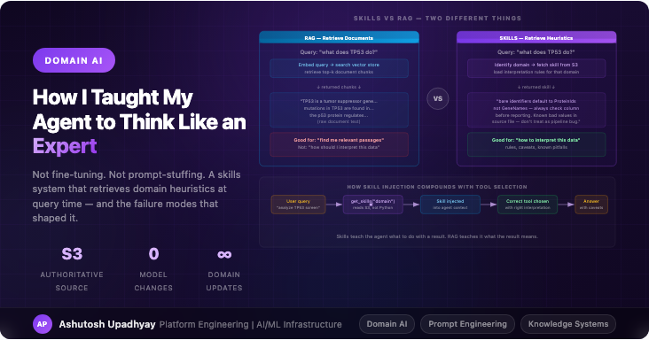

Domain AII spent two months watching my agent confidently misinterpret domain-specific data before I understood why. The solution wasn't a better model. It was a skills system that retrieves domain heuristics at query time.
My agent reasons over biological data: protein expressions, drug sensitivity scores, disease-gene associations. The underlying model is genuinely capable — it can explain mechanisms, write analysis code, synthesise across sources. The problem I kept hitting wasn't capability. It was context.
A specific example. The agent was asked to analyze which proteins showed unusual response to a compound. It retrieved the data correctly, ran the analysis correctly, and then reported the wrong proteins — because it had defaulted to treating bare identifiers as gene names, when the source data uses protein IDs. The gene-name and protein-ID namespaces partially overlap. The agent's answer wasn't obviously wrong. Some of the proteins it named were real, plausible hits. The error was silent and confident.
This is the class of problem that a more powerful model doesn't fix. The model doesn't know this dataset's identifier convention. It can't know — the convention was established by the data provider, it's not in any public corpus, and it changes depending on which data file you're looking at. What the agent needed wasn't more intelligence; it needed a way to be told, at the moment it was about to reason over that data, "here are the rules that apply in this domain."
My first instinct was RAG — build a vector index of domain documentation and retrieve relevant passages when needed. I tried a version of this. It helped with factual questions ("what does this gene do?") but didn't solve the interpretation problem.
The distinction matters: RAG retrieves documents. What I needed was to retrieve rules. There's a difference between "here's a passage from a paper about TP53" and "here's how you should interpret a result involving TP53 in this specific dataset with its specific identifier conventions and known data quality issues."
Documents tell the agent what things are. Rules tell it how to reason about them. Mixing the two into a single RAG index means your rules get diluted by documents during retrieval — the rule about identifier conventions might get ranked below a relevant-but-not-helpful passage about protein biology.
What I ended up building is something I call a skills system. It's conceptually similar to RAG but operates on a different unit: instead of document chunks, it retrieves structured rule sets — compact, high-signal records that tell the agent specifically how to behave when working in a particular domain.
A skill is a structured JSON object stored in S3. Each skill covers one data source or analysis domain. It has four fields:
{
"knowledge": "string interactions use combined_score 0-1000; default cutoff 400 is low — use 700+ for high-confidence edges",
"key_concepts": ["combined_score", "experimental_score", "coexpression_score"],
"common_mistakes": [
"treating all interaction types as equivalent — coexpression ≠ physical interaction",
"using default cutoff 400 for network analysis — results in thousands of low-confidence edges"
],
"example_prompts": [
"Find high-confidence interaction partners for TP53",
"Which proteins form a tight interaction cluster with CDK2?"
]
}The knowledge field is the distilled rules — the things a domain expert would tell a new analyst before they touched the data. The common_mistakes field is particularly valuable: it's the list of confident-but-wrong interpretations the agent is otherwise likely to make.
When a query comes in, the agent calls a get_skills tool that identifies the relevant domain and fetches the skill from S3. The skill is injected into the agent's context window before it starts reasoning over the data.
async def get_skills(domain: str) -> dict:
"""
Retrieve domain-specific interpretation rules.
Always call this before analyzing data from an unfamiliar source.
"""
s3_key = f"skills/{domain}.json"
obj = await s3_client.get_object(Bucket=SKILLS_BUCKET, Key=s3_key) # Requires aioboto3, not boto3
return json.loads(await obj["Body"].read())That last line is the part that bit me for three months. The agent reads from S3. Editing the Python definition of the skill changes nothing at runtime until you overwrite the S3 object. I updated the interaction score cutoff recommendation in the code, rebuilt the container, deployed it, and the agent kept applying the old cutoff for a week before I realized why.
Editing the Python file alone is inert. The container is not the authoritative copy of a skill. The S3 object is. Every skill edit has two steps: update the code (for version control and review), then overwrite the S3 object (for actual runtime effect). Treating the code edit as the complete change is the most common mistake I see people make with this pattern.
The identifier namespace problem I described at the start went away immediately once I added a skill for the relevant data source that explicitly said: "bare identifiers in this source are ProteinIds, not GeneNames — check the column name before reporting." The agent started including this caveat in its answers and checking the right column.
But the more interesting effect was what happened to tool selection. I hadn't expected this. Once the agent has a skill loaded that explains the source data's structure and caveats, it picks different tools than it would otherwise. If the skill says "this source has known quality issues with cell lines derived from lab X — cross-check with an independent source before drawing conclusions," the agent will often spontaneously call the cross-reference tool without being asked. The skill doesn't just change how the agent interprets results; it changes which results it considers worth verifying.
That's the compounding effect that RAG-based document retrieval doesn't produce. Documents tell the model about facts. Skills teach it how to behave.
Three things, all worth flagging because I'd make the same mistakes again without having been through them:
I tried to make skills too comprehensive. My first version of the interaction network skill was 800 words covering every scoring scheme, every interaction type, every caveat I could think of. The agent would retrieve it, receive an 800-word context dump, and then ignore most of it because a long skill looks like a document. The version that actually worked was a tight, opinionated 150 words focused on the three most common mistakes and the single most important interpretation rule. Skills should be the distillation of expertise, not its documentation.
I assumed the agent would always call get_skills. It doesn't, unless the system prompt says to. I added an explicit instruction: "When working with data from a new source, call get_skills before beginning analysis." Without that, the agent would skip the skill call when it felt confident enough to proceed without it — which is exactly the situation where a skill is most needed. Confidence is not a reliable signal that the agent has the right domain context.
I put the skills in one place. I built a single-agent system first, then split into a multi-agent architecture. When I split, I added get_skills to the primary agent but forgot to add it to the four specialist subagents. For weeks, the Data Scout subagent was retrieving and analyzing data without domain context, while the primary agent was answering final questions with correct context about data it hadn't itself retrieved. The error was subtle: final answers looked reasonable because the primary agent had the skill, but the intermediate analysis the specialist did was applying wrong defaults. Add get_skills to every agent that touches domain data, not just the one that produces the final answer.
The version that works: each specialist agent calls get_skills for the specific source it's working with. The primary orchestrator calls get_skills for the overall domain. Both skill calls happen before any data retrieval. The specialist's skill covers "how to read this source correctly"; the orchestrator's skill covers "how to synthesize results from multiple sources in this domain." They're different questions and benefit from different answers.
Skills are worth building when you have data that requires interpretation conventions that aren't in the model's training data. That's a surprisingly large set of cases in any specialized domain:
If a domain expert would spend ten minutes briefing a junior analyst before letting them loose on your data, those ten minutes of domain context are worth capturing as a skill. The model is the junior analyst; the skill is the briefing.
Domain expertise in an LLM-based system is not a property of the model. It's something you build and maintain separately, in a form that can be retrieved and injected at the point where reasoning happens.
Fine-tuning puts domain knowledge into the weights — expensive, slow to update, and invisible when it fails. Prompt-stuffing puts it into the system prompt — broad but untargeted, and you quickly run into context limits across a wide domain. A skills system puts it into retrievable objects keyed to specific domains — cheap to update, easy to test, and available exactly when and where reasoning needs it.
The gap between "capable general model" and "reliable domain agent" is mostly in the interpretation layer. That's the layer the skills system covers. Building it isn't glamorous work — it's essentially writing down expert knowledge in structured form and keeping it current. But it's the work that turns an impressive demo into a system people trust for real decisions.